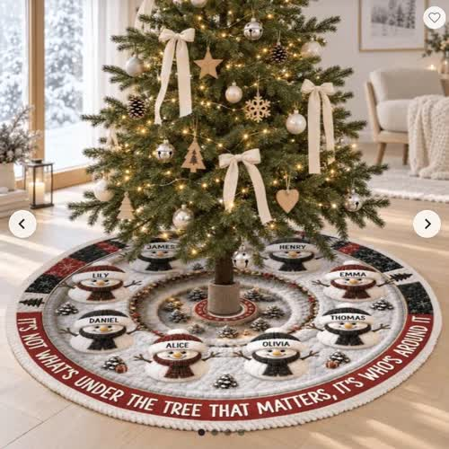
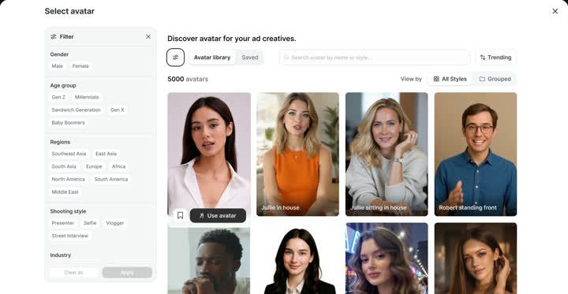

Sản phẩm: chân cây thông in tên cả nhà. Cô gái nói chuyện như người thật, đến giây 5 hiện chữ cô ấy không có thật (sản phẩm thật, người là AI), rồi trước/sau với 3 creator. Khoảng 34 giây, khung 16:9; gắn nhãn AI.

Một shot selfie liền, quay ngang 16:9: cô gái ngồi lệch trái, cây thông bên phải khung, cầm chân cây thông, chỉ vào tên trên đó, nói tự nhiên.
Ảnh sản phẩm của shop (tham chiếu). Pinterest woman unboxing product selfie: selfie ánh sáng ấm.
Đóng băng và glitch đúng giây 5, màu tách kênh đỏ xanh, chữ lớn đập vào giữa khung.
Hiệu ứng làm trong AE (ảnh minh hoạ bằng bộ lọc trang).
Chia đôi khung 16:9, mỗi nửa 960×1080: bên trái ảnh sản phẩm phẳng trên shop (đứng yên), bên phải một creator cầm đúng chân cây đó. Lặp 3 lần với 3 người, 3 độ tuổi, 3 căn phòng. Tên trên chân cây phải giữ nguyên ở cả 3.
Cấu trúc trước/sau lấy từ reel Giáng sinh 2006 vs 2026 (đổi sản phẩm và cách kể). Ảnh: shop + Pinterest.
UI rút gọn: dán link, chọn góc, chọn người, tạo.
Giao diện thật: UGC Ads.
Logo Promer, CTA, dòng nhỏ "Not real · Ep.1" để lặp thành loạt (kênh brewshot lặp một khung hook).
Không cần ảnh tham chiếu.
Mở bằng lưới 6 gương mặt như bảng casting (đúng thư viện avatar của Promer); một khung sáng lên, người đó mới bắt đầu nói.
Pinterest ugc creator holding product: lưới nhiều người cầm sản phẩm.
Các gương mặt mờ đi, chữ "NONE OF THEM ARE REAL" hiện giữa lưới.
Hiệu ứng làm trong AE.

Máy lùi ra thấy thư viện avatar, con trỏ chọn lần lượt 3 người; mỗi lần chọn, người đó cầm chân cây ngay trong khung.
Giao diện thật: Select avatar, 5000 avatars.
UI rút gọn: Promer viết kịch bản, bấm tạo.
Giao diện thật: Generate video scripts.
Giống bản A.
Không cần ảnh tham chiếu.
Lời: (cô gái) "My whole family's names are on this tree skirt. Look, here's mine."
Chữ: Names on the tree skirt
Tiếng: tiếng phòng nhẹ; bản B thêm click khi chọn mặt
Lời: (Emma) "The tree skirt is real. She isn't."
Chữ: SHE'S NOT REAL · AI-generated (bản B: NONE OF THEM ARE REAL)
Tiếng: impact, record scratch ngắn
Lời: "One product photo. Three creators who never existed. Every name stays on the skirt."
Chữ: 1 photo → 3 creators
Tiếng: whoosh mỗi lần đổi người
Lời: "Paste the link. Pick an angle. Pick a creator. Promer builds the video."
Chữ: Link → Angle → Creator
Tiếng: click, pop
Lời: "Test your first AI creator at promer dot A I. Plans from nine dollars a month."
Chữ: promer.ai · From $9/mo
Tiếng: chime
01_Brand/design-system/assets/product-screens/. Ảnh sản phẩm của shop chỉ để tham chiếu: video phải xoá logo và chữ của shop. Chưa có: key visual, ảnh/video AI, dựng After Effects.